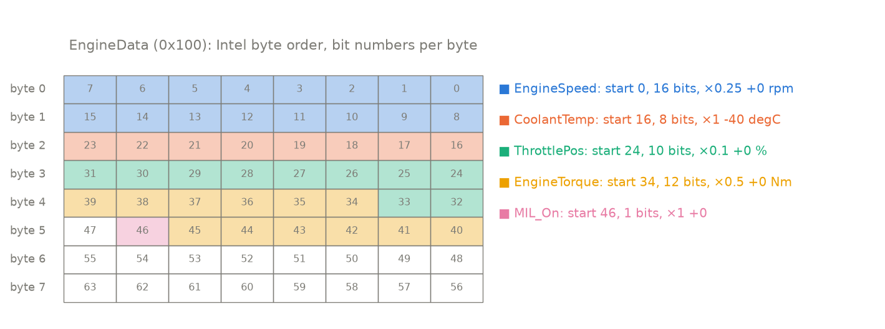

CAN¶
CAN Unpack¶
can.unpack · CAN
Decodes a CAN frame: the input is the frame's data bytes (a vector: 8 for classic CAN, up to 64 for CAN
FD), and there is one output per signal, in physical units (raw · factor + offset from the DBC file).

Intel (little-endian) and Motorola (big-endian) byte order, signed and unsigned signals are supported. Multiplexed signals are only in the frame when the multiplexer selects them; their outputs hold the last value received. The block can be generated as C code.
Parameters¶
| Name | Default | Unit | Description |
|---|---|---|---|
dbc_file |
'' |
DBC file (relative paths are relative to the model file) | |
message |
'' |
Message name in the DBC file | |
signals |
'' |
Signals to use, comma separated (empty = all, in DBC order) |
Direct feedthrough: yes
CAN Pack¶
can.pack · CAN
Encodes a CAN frame: one input per signal (physical units), output = the data bytes (uint8; 8 for
classic CAN, up to 64 for CAN FD).
Values are converted to the raw integer with rounding to nearest and saturated to the bit field, exactly
as the generated C code does. Signals that are not selected are sent with their initial value from the
DBC file (GenSigStartValue, else raw 0). Multiplexed signals are written only when the multiplexer value
selects them.
Parameters¶
| Name | Default | Unit | Description |
|---|---|---|---|
dbc_file |
'' |
DBC file (relative paths are relative to the model file) | |
message |
'' |
Message name in the DBC file | |
signals |
'' |
Signals to use, comma separated (empty = all, in DBC order) |
Direct feedthrough: yes
CAN Transmit¶
can.transmit · CAN
Sends a CAN message on a simulated bus: one input per signal (physical units), packed with the DBC file
(with payload bytes: one input with the 8 data bytes, e.g. from CAN Pack and E2E Protect).
mode periodic sends at every sample: sample_time 0 takes the message's cycle time from the DBC file
(GenMsgCycleTime; 10 ms if it has none);
on_change sends only when the packed bytes change (event-triggered); on_trigger adds an input that
sends on its rising edge. The frame competes for the bus with the other senders: the lowest identifier wins
the arbitration, and it arrives after its transmission time (see the CAN Bus block).
Fault injection for tests: drop (probability of losing a frame), delay (extra queueing delay), corrupt (probability of a flipped data bit, which an E2E check detects) and bus_off (from fault_time this node sends nothing).
Parameters¶
| Name | Default | Unit | Description |
|---|---|---|---|
dbc_file |
'' |
DBC file (relative paths are relative to the model file) | |
message |
'' |
Message name in the DBC file | |
signals |
'' |
Signals to use, comma separated (empty = all, in DBC order) | |
bus |
'can0' |
Name of the simulated CAN bus | |
payload |
'signals' |
Signals (packed with the DBC) or the raw 8 data bytes — one of signals, bytes |
|
mode |
'periodic' |
When to send — one of periodic, on_change, on_trigger |
|
node |
'' |
Sending ECU (for the trace) | |
drop |
0.0 |
Probability of losing a frame (fault injection) | |
delay |
0.0 |
s | Extra delay before the frame is queued (fault injection) |
corrupt |
0.0 |
Probability of a flipped data bit (fault injection) | |
bus_off |
0.0 |
1: the node goes bus-off at fault_time (fault injection) | |
fault_time |
0.0 |
s | When the faults start |
sample_time |
0.0 |
s | Send period; 0 = the message's cycle time in the DBC |
Direct feedthrough: yes · no outputs
CAN Receive¶
can.receive · CAN
Receives a CAN message from a simulated bus: one output per signal (physical units, the last frame
received; with payload bytes one output with the 8 data bytes, e.g. for an E2E Check), then new (1 for the sample in which a new frame arrived) and age (seconds since the last
frame; use it for a timeout monitor, e.g. with a Diagnostic Monitor for U-codes). Until the first frame the
signals are 0 and the age counts from the start.
Parameters¶
| Name | Default | Unit | Description |
|---|---|---|---|
dbc_file |
'' |
DBC file (relative paths are relative to the model file) | |
message |
'' |
Message name in the DBC file | |
signals |
'' |
Signals to use, comma separated (empty = all, in DBC order) | |
bus |
'can0' |
Name of the simulated CAN bus | |
payload |
'signals' |
Signals (packed with the DBC) or the raw 8 data bytes — one of signals, bytes |
|
sample_time |
0.01 |
s | Task period of the block |
Direct feedthrough: no · no inputs
CAN Bus¶
can.bus · CAN
Settings of a simulated CAN bus, and its load: bitrate (125, 250, 500 kbit/s or 1 Mbit/s), and the output is the bus load (0..1) over the last sample_time. A CAN bus should stay below about 50-70 % load, so the lowest-priority messages still get through in time.
With interface set (socketcan, pcan, kvaser, vector, ...; needs python-can and the
driver), the bus is connected to real hardware: every frame the model transmits is also sent on the
interface, and frames from the interface reach the CAN Receive blocks. Run the simulation in real time
(Simulation ▸ Real-time pacing) for HIL-style tests against a real ECU.
Parameters¶
| Name | Default | Unit | Description |
|---|---|---|---|
bus |
'can0' |
Name of the simulated CAN bus | |
bitrate |
500000.0 |
bit/s | Bit rate |
data_bitrate |
2000000.0 |
bit/s | CAN FD data-phase bit rate |
interface |
'none' |
Real CAN interface (python-can); none = simulated only — one of none, socketcan, pcan, kvaser, vector, slcan, udp_multicast, virtual |
|
channel |
'' |
Interface channel, e.g. can0, PCAN_USBBUS1, 0 | |
sample_time |
0.1 |
s | Window for the bus load |
Direct feedthrough: no · no inputs
E2E Protect¶
can.e2e_protect · CAN
Protects a frame AUTOSAR E2E style (like profile 1): writes an alive counter (0..14, one step per sample) into the low 4 bits of counter_byte and a CRC-8 (SAE J1850) over the data_id and the other bytes into crc_byte. Put it between CAN Pack and CAN Transmit (leave those two bytes free in the DBC). The receiver checks it with E2E Check, which detects corrupted, repeated, lost and out-of-order frames. Can be generated as C code.
Parameters¶
| Name | Default | Unit | Description |
|---|---|---|---|
data_id |
256 |
E2E data ID (16 bit, agreed between sender and receiver) | |
crc_byte |
0 |
Byte that holds the CRC | |
counter_byte |
1 |
Byte whose low 4 bits hold the alive counter | |
sample_time |
-1 (inherited) | s | -1 = inherited |
Direct feedthrough: yes
E2E Check¶
can.e2e_check · CAN
Checks a frame protected by E2E Protect. Inputs: the 8 data bytes and new (from CAN Receive). Outputs: the status and valid (1 = use the data).
===== =============== ========================================================================== 0 ok new frame, CRC right, counter one step on (up to max_delta: some lost) 1 no_new_data no frame since the last sample 2 wrong_crc the bytes are corrupted (or the sender uses another data ID) 3 repeated the same counter again: a stuck sender 4 wrong_sequence the counter jumped more than max_delta: too many frames lost ===== =============== ==========================================================================
A receiver typically substitutes a safe value when valid is 0 for longer than a timeout, and sets a DTC. Can be generated as C code.
Parameters¶
| Name | Default | Unit | Description |
|---|---|---|---|
data_id |
256 |
E2E data ID (16 bit, agreed between sender and receiver) | |
crc_byte |
0 |
Byte that holds the CRC | |
counter_byte |
1 |
Byte whose low 4 bits hold the alive counter | |
max_delta |
2 |
Largest counter step accepted (1 = no frame may be lost) | |
sample_time |
-1 (inherited) | s | -1 = inherited |
Direct feedthrough: yes
CAN Rest Bus¶
can.rest_bus · CAN
Rest-bus simulation: sends every message of the ECUs (nodes) that are not modelled, at their cycle
times from the DBC file, so the ECU under test sees a complete bus. Signal values default to 0 (or to
the DBC's initial value); set others with values, e.g. CoolantTemp=90, VehicleSpeed=50.
nodes empty = every sender in the DBC file.
Parameters¶
| Name | Default | Unit | Description |
|---|---|---|---|
dbc_file |
'' |
DBC file | |
nodes |
'' |
Sending ECUs to simulate, comma separated (empty = all) | |
values |
'' |
Signal values, e.g. CoolantTemp=90, VehicleSpeed=50 | |
bus |
'can0' |
Name of the simulated CAN bus | |
sample_time |
0.001 |
s | Scheduler tick (a divisor of the cycle times) |
Direct feedthrough: yes · no inputs, no outputs
CAN Gateway¶
can.gateway · CAN
Forwards frames from one bus to another, like the central gateway between the powertrain and the body
CAN. ids: the identifiers to route (e.g. 0x100, 0x200; empty = all). A frame is forwarded at the
gateway's next task (sample_time), so routing adds up to one period of latency plus the transmission
time on the second bus.
Parameters¶
| Name | Default | Unit | Description |
|---|---|---|---|
from_bus |
'can0' |
Bus to read from | |
to_bus |
'can1' |
Bus to send on | |
ids |
'' |
Identifiers to route, comma separated (empty = all) | |
sample_time |
0.001 |
s | Gateway task period |
Direct feedthrough: yes · no inputs, no outputs
XCP Slave¶
can.xcp_slave · CAN
Makes the simulated ECU reachable for a calibration tool over XCP on CAN (INCA, CANape, or
nervus.xcp.XcpMaster): the inputs are measurements that the tool can read, the outputs are
calibration values that the tool can change while the simulation runs (like the ECU's calibration
RAM). Use the outputs where the model needs the tunable value, e.g. as the gain of a controller.
calibrations lists workspace variables (scalars); each output starts at the variable's value.
measurements names the inputs. The memory map (8-byte IEEE doubles, Intel byte order): calibration
k at 0x10000 + 8·k, measurement k at 0x20000 + 8·k; write_a2l writes the matching A2L file.
Requests arrive on request_id, answers go out on response_id (both on bus). With an interface on the CAN Bus block and real-time pacing, a real tool on a real CAN adapter can connect.
Parameters¶
| Name | Default | Unit | Description |
|---|---|---|---|
bus |
'can0' |
Name of the simulated CAN bus | |
request_id |
2032 |
CAN identifier of the requests (master → slave) | |
response_id |
2033 |
CAN identifier of the answers (slave → master) | |
measurements |
'' |
Names of the measured inputs, comma separated | |
calibrations |
'' |
Workspace variables to calibrate (one output each) | |
sample_time |
0.001 |
s | Task period: requests are answered at this rate |
Direct feedthrough: no